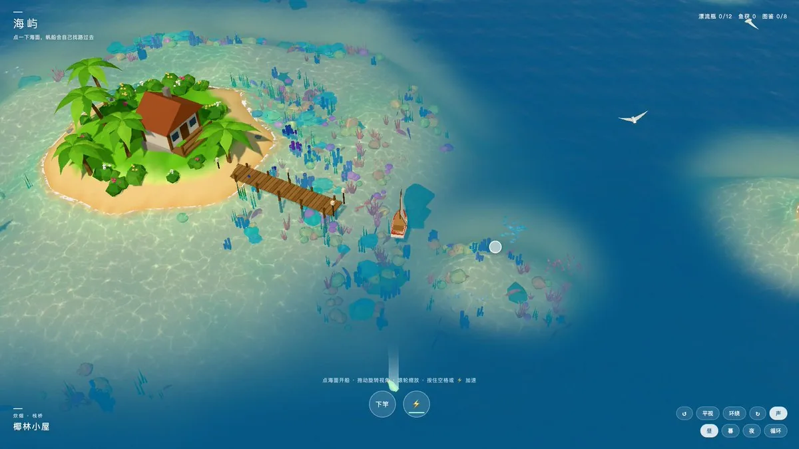
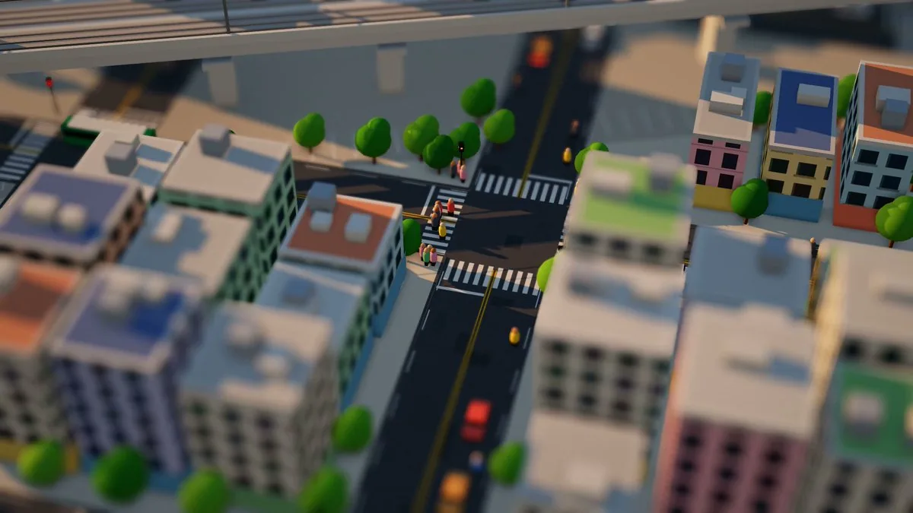

原帖照录
太强了！我要给 claude code 跪了 🧎🏻🧎🏻🧎🏻
我让claude 生成了一块岛屿 我要能开船 能钓鱼 能上岸
要有鱼儿要有海风 要有灯塔 要有虫提示词：
用 three.js 纯代码做一个浏览器里能玩的风格化小岛海洋小游戏「海屿」。不用 3D 模型文件，所有物体用代码拼；不用构建工具，ES Module 加 importmap 直接打开就能跑。
【视觉】低多边形卡通风，高空斜俯视，色彩清透。
- 海底：噪声生成高度场，4 座岛加 6 片水下珊瑚礁，岛外一圈浅滩台地带沙丘；按高度上色（深海沙、浅滩沙、藻绿、湿沙、沙滩、草地）。
- 水面：自写着色器，把海底高度做成贴图，按水深混合颜色和透明度：浅滩是透明薄荷绿，往外渐变深蓝；法线扰动、弱菲涅尔、太阳高光；岸边白色泡沫，加一道道往岸上推的浪线；远处融进海雾。
- 焦散：注入海底和水下物体的材质，两层错位滚动的焦散贴图取最小值，越深越弱。
- 岛上：会随风摆的椰树、灌木和花、礁石、木屋（夜里窗户亮）、带路灯的栈桥、红白灯塔（夜里有旋转光束）。
- 水下：几千个实例化的珊瑚、海葵、海草；20 群鱼，船靠近会散开；海龟划水；海鸥盘旋。
【船与交互】
- 点海面自动寻路：网格 A*，水深超过 0.9 且留 1 格安全边距才能走，再按视线检测拉直路径；点到岸上就停在最近可达的地方。
- 目标点有扩散波纹，沿途画白色虚线；转向速度有上限，接近终点自动减速；帆随船速鼓起，转弯时船身侧倾。
- 船尾留一条渐隐的尾迹带：两侧白线，中间碎泡沫。
- 按住空格或 ⚡ 加速，带能量条。
【镜头】平滑跟随船；拖动 360° 旋转（轻点开船，拖动转视角）；滚轮或双指缩放；有平视/俯视切换和自动环绕；天空球的海平线和海雾同色，夜里有星星。
【昼夜】关键帧插值：白天 → 黄昏 → 日落 → 月夜 → 黎明，同时控制太阳、环境光、三档水色、雾色、焦散、高光、灯光和泛光。
【玩法】
- 12 个漂流瓶，每个上方有光柱，靠近自动拾取，弹出一句话。
- 船停在鱼群旁出现「下竿」，咬钩后 1.4 秒内收竿，共 8 种鱼图鉴（含稀有的石斑、金枪鱼）。
- 开到不同地方，左下角淡入地名。
【声音】WebAudio 实时合成，不用音频文件：海浪、船头水声、海鸥、夜里虫鸣，加拾取、咬钩、收获的音效。
【手机】竖屏适配，单指拖转、双指缩放、轻点开船，⚡ 和「下竿」放在拇指位置。
【贴图】让 Codex 生成沙地、海底、草地、焦散、泡沫五张贴图，再做无缝平铺处理。
【界面】中文极简，按钮用半透明毛玻璃。
作者在评论区的补充
2026-10-29 22:07 UTC+8，作者回复自己的帖子：
Codex 只负责出图，代码全部是claude code 写的，两边同时进行
同一分钟，作者又发了一条“怎么把岛做得更丰富”的长回复，照录如下：
丰富岛有三种办法可以混着用：
一是用免费现成模型，Kenney有木箱木桶帐篷篝火小船宝箱，Quaternius有海豚鲸鲨鱼热带鱼动画和椰树灌木，Poly Pizza补吊床风车灯笼海星贝壳，KayKit有成套小镇冒险场景，Sketchfab最全但授权要挑CC0或CC-BY，贴图用Poly Haven和ambientCG，音效用freesound.org，下载前再核对授权；
二是用AI生成，2D贴图图标概念图让Codex画，3D模型用Meshy、Tripo、混元3D从图或一句话生成glb，生成模型面数高要先减面，适合做主角建筑，小物件大量摆还是用现成素材稳；
三是直接用代码造，陆地做大石堆沉船小木船晾网架吊床篝火萤火虫风车，海里做海豚鲸鳐鱼发光水母漂木椰子，天气做云影雨滴涟漪海雾彩虹，玩法上埋宝箱靠岸才能挖，多做渔村岛火山岛红树林岛。
素材导入后用GLTFLoader加载，大量摆放的做实例化防掉帧，材质统一成项目扁平风格并对上调色板，也要吃水下焦散，每个模型控制在几千面以内。
另有一条回复 @RyanJ_KOL 的提问：“流畅得很”（原提问不是作者所写，未收录）。
这条提示词的结构
提示词没有只说“做个小岛游戏”，而是逐项给出验收标准。拆开看大致是这几层：
| 层 | 提示词里的硬约束 | 作用 |
|---|---|---|
| 工程边界 | 纯 three.js、不加载模型文件、不用构建工具、ES Module + importmap | 单页面直接打开就能跑，模型也不会被“去下载素材”带偏 |
| 地形与水 | 噪声高度场；海底高度写进贴图，水面着色器按水深混色；菲涅尔、高光、岸边泡沫与浪线；两层焦散取最小值 | 浅滩透明、深海渐蓝的效果靠“水深”这一份数据驱动 |
| 生态与密度 | 几千个实例化的珊瑚海草、20 群会躲船的鱼、海龟、海鸥 | 用实例化堆密度，帧率才扛得住 |
| 交互 | 网格 A*（水深 > 0.9、留 1 格边距）+ 视线拉直；转向限速、终点减速、帆随速鼓起、转弯侧倾、尾迹 | “点哪儿开到哪儿”，船的手感由几个参数定死 |
| 时间与镜头 | 白天→黄昏→日落→月夜→黎明关键帧，一起驱动光、水色、雾、焦散、灯光；跟随、旋转、缩放、环绕 | 一条时间轴统一全局氛围 |
| 玩法 | 12 个漂流瓶、8 种鱼图鉴、咬钩 1.4 秒窗口、地名淡入 | 目标小而具体，模型知道什么时候算做完 |
| 声音与终端 | WebAudio 实时合成海浪、水声、海鸥、虫鸣与提示音；手机竖屏手势与拇指区按钮 | 不用音频文件，也不漏掉移动端 |
写法和作者 10 月 26 日那条《移轴微缩短片》提示词（见附录）是同一个思路：先列出硬性规格和评判标准，再给创意。那条更极端，连响度、true peak、子帧数、自评分都写进了交付要求。
注意事项
- ⚠️ 未核实：游戏和代码都没有公开，本站没有试玩，也不知道视频里的效果是一次生成还是多轮修改得来的。帖子没写 Claude Code 背后用的是哪个模型版本，也没写花了多少轮对话或多少钱。
- ⚠️ 提示词 ≠ 成品清单：提示词里的参数（1.4 秒咬钩窗口、20 群鱼、12 个漂流瓶等）是作者提的要求，视频只能看出一部分，不能证明每一条都实现了。封面帧右上角确实显示“漂流瓶 0/12 · 鱼获 0 · 图鉴 0/8”，和提示词对得上。
- ⚠️ “Codex 出图”：作者说贴图交给 Codex 生成，但没说明具体用的是哪个图像模型或什么入口，本站没有核实。
- ⚠️ 素材授权：评论区列的素材站，授权各不相同。Kenney、Quaternius、KayKit、Poly Haven、ambientCG 多为 CC0；Poly Pizza、Sketchfab、Freesound 混有 CC0、CC-BY 等多种许可；Meshy、Tripo、混元 3D 是有自己服务条款的生成服务（多数要付费）。以上是本站按常识做的补注，没有逐条核对，作者自己也提醒“下载前再核对授权”。
- 利益相关：帖子和回复里没有推广链接、带 utm 的链接或付费服务链接，没看到合作标注。语气是个人分享（“我要给 claude code 跪了”）。
站内相关
- Ultra Water：three.js 实时 FFT 海洋渲染器：同样是浏览器里的海面，走物理 FFT 路线，和「海屿」的风格化浅滩着色器正好对照。
- Opus 5.5 + Hi3D 通宵搓一个 3D 海战游戏：另一条路，模型由 AI 生成后减面再装配，对应作者说的第二种办法。
- 木马人的 3D 武侠 ARPG 和 Sac 的《小王子》3D 游戏：都是 AI 辅助的网页 3D 游戏流程。
- Eian 的代码微缩动画合集：和附录里的移轴微缩短片属于同一类题材。
附录：被引用的旧帖《移轴微缩短片》提示词全文
原帖引用了作者自己 2026-10-26 06:46 UTC+8 发的一条帖子（截至 2026-10-30 11:55 UTC+8 约 1.15 万浏览 / 95 赞 / 105 收藏）。帖子配了一段 20 秒的移轴微缩城市短片，正文是生成这部片子的提示词。这也是作者本人的中文原帖，以下逐字照录。帖子没写用的是哪个模型或工具 ⚠️。

展开提示词全文（约 130 行）
提示词：
你是一部 20 秒动态设计短片的导演、动态设计师、工程师和声音设计师，只做这一部片子。
目标：这个风格最经典、也最惊艳的形态，达到获奖入围 / 高端商业片水准。干净但像模板的结果算失败。
对标：Keith Loutit 的移轴延时作品、Sam O'Hare《The Sandpit》、Buck / ManvsMachine 的商业片、
Apple 发布会动效、抖音/B站顶级移轴微缩账号。
# 风格
移轴微缩摄影（Tilt-Shift Miniature）：把真实尺度的城市拍成桌面上的玩具模型。
# 输出规格（固定；所有数字都在最终 video.mp4 上实测，不测中间文件）
- 1920×1080，30 fps，正好 20.000 秒（600 帧），H.264（yuv420p）+ 立体声 AAC 48 kHz。
- 响度：−14 LUFS 综合响度（±0.5）；true peak ≤ −1 dBTP，必须在 AAC 编码之后测
（AAC 遇到尖锐瞬态会过冲 1–2 dB，母带要留余量）。
- 存为 <项目目录>/video.mp4，报告里写出绝对路径。
# 移轴的标志特征（按这些评判）
1. 高机位俯拍：俯角约 35–55°，真实透视（PerspectiveCamera，FOV 偏窄约 20–35°），不是等轴测。
2. 浅景深焦带：只有一条窄的清晰带（约画面高度的 15–25%），上下（或斜向）强烈虚化，越远越虚。
焦带要像真实的倾斜焦平面一样贴着地面延伸，而不是简单的屏幕上下高斯模糊。
3. 玩具感：饱和度和对比度提高、整体略提亮；硬朗的太阳光，阴影短而锐利；材质带一点塑料或漆面的高光；
有轻微暗角。
4. 时间加速：车流、行人、云影的运动比真实世界快，有延时摄影的轻快感；
可以加「定格感」（关键运动按 12–15 fps 保持帧），但成片仍是 30 fps 输出。
5. 尺度线索：大量重复的小物件（汽车、行人、树、屋顶空调、路灯、斑马线），细节密度要足够让大脑相信
「这是缩小了的真实城市」。
6. 运镜：缓慢平移或推轨，不做大角度旋转；焦带跟随主体移动。
7. 拉焦转场（移轴特有）：焦带推到整屏全虚 → 相机在虚化中移动到新位置 → 在新主体上重新对焦。
镜头之间用它衔接，不用交叉淡化。
# 创意种子
「微缩城·高铁穿城」：一座阳光下的玩具城市，一条高架高铁线从城市中央斜穿而过；
20 秒里，从清晨到午后（光线和影子方向缓慢转动），城市逐渐醒来，最后一列高铁贯穿整座城。
第一幕 醒来（0–5 秒）
- 0–0.5 秒 钩子：第一帧就是完整构图且已在运动——焦带里路口的车流在跑，阳光斜照，长影子。
不允许超过 0.3 秒的空画面或黑场。
- 0.5–5 秒：俯拍缓慢平移，路口红绿灯切换、斑马线上的行人、早餐摊冒热气、公交进站；
远处高架上一道反光一闪而过，埋下高铁的伏笔。
第二幕 城市运转（5–11 秒）
- 5 秒左右一次拉焦转场，换到第二个区域：河道里的小船、公园里跑步的人、建筑工地的塔吊在转。
- 8 秒左右再一次拉焦转场，来到高铁线下方：道口、站台、等车的小人。
- 光线从清晨的暖黄逐渐变成正午的白光，影子缩短并转向——这是全片的时间递进。
第三幕 高铁穿城（11–16 秒，高潮落在约 60–75% 处）
- 11–12.5 秒 蓄势：道口栏杆落下、信号灯变红、电线微颤、鸟群停在电线上；音乐收窄，铁轨开始轻响，
焦带缓慢转向高铁线方向。
- 12.5–15 秒 高潮：高铁从画外高速驶入，沿焦带正中穿城而过，相机跟拍平移（不旋转）；
车身反光扫过、气浪让行道树和旗子摆动、鸟群惊起、焦带里的车流让行。全片最清晰、最炫的就是这一段，
至少要有 2 秒干净无遮挡的完整镜头。
- 15–16 秒：高铁尾灯远去，城市恢复运转，余震般的细节（树叶还在晃、鸟群落回电线）。
第四幕 揭示与收尾（16–20 秒）
- 16–18.5 秒：镜头上升拉远，焦带逐渐变宽，露出整座城和蜿蜒的高铁线，原来是桌上的模型沙盘
（可以露出沙盘边缘、桌面、一点点室内光——揭示「它真的是模型」）。
- 18.5–20 秒：标题以模型铭牌或地面标线的形式放在场景里（铭牌立在沙盘边、或印在地面），
静帧保持约 1.5 秒，城市仍有细微运动（车流、云影、远去的高铁尾灯）。
可以修改概念、文案和节拍，只要更强、仍然一眼认出是移轴微缩，并命中上面所有标志特征。
20 秒容易单调：每 2–3 秒画面上必须有一个新的看点，忙段和静段要交替。
品牌名和高铁涂装都自己设计——不要复刻复兴号、和谐号或任何真实列车的涂装和标志。
# 技术路线（建议）
- 首选 Blender（Cycles/EEVEE）：真实相机景深和焦平面，玩具材质和硬阴影最容易做对，用脚本渲染 PNG 序列。
- 备选 Three.js：PerspectiveCamera + 软硬结合的阴影 + AO + 基于深度的景深。景深必须「深度感知」：
按像素到倾斜焦平面的世界空间距离计算弥散圈，避免清晰物体边缘出现虚化光晕（前景虚化不能糊到清晰主体上）。
- 不管哪条路线，都要先单独检查景深、AO 和深度缓冲的输出，确认没有错误再继续。
- 20 秒的渲染量翻倍：先估算单帧耗时 × 总子帧数，必要时降低子帧数或只对快速段落加子帧，并在报告里说明。
- 选哪条路线、为什么，写进报告。
# 声音（两层，都必须清楚听得见）
- 配乐：轻快的玩具感音乐（拨奏弦乐 / 八音盒 / 马林巴 + 轻鼓），约 120 BPM，20 秒正好 10 小节。
结构跟着四幕走：前奏（醒来，乐器少）→ 律动加入（城市运转）→ 收窄 + 渐强（蓄势）→ 全编制（高铁穿城）
→ 回落、收束在主和弦（揭示与标题）。放在音效下面。
- 音效：一听就是音效、大多不带音高的拟音——城市环境底噪（车流、远处人声、鸟叫）、红绿灯提示音、
公交进站气刹、塔吊转动、道口铃声、铁轨的「咔嗒」节奏、高铁驶近的多普勒呼啸、穿过时的气浪轰鸣、
鸟群扑翅声、拉远时的风声、标题出现的一声轻响。
每次拉焦转场配一个柔和的「失焦」音色（低通扫频 + 空气声）。音效可以叠一个音高，但不能被音符取代。
- 平衡检查：分别导出音效轨和配乐轨。音效轨单独测 ≥ −20 LUFS，每个关键事件都有清晰的瞬态；
如果音效被音乐盖住，就压低音乐。高铁穿城那一刻，音效是主角。
- 铁轨节奏和音乐节拍对齐。
# 工作方法
1. 方案：写清楚四幕的钩子、递进、唯一的高潮、收尾静帧；把每个标志特征对应到具体时刻。
建一份节拍表（cue sheet）作为数据文件（例如 JSON），画面代码和音频代码都从它读取，不手抄时间。
2. 先定关键帧：渲染第 0 帧加 12–16 个关键时刻的静帧（每幕至少 3 张），逐张看。每张都要能当海报：
构图、层次、留白、约 5% 安全边距；高楼、高架、风机不能被画面边缘裁掉；焦带位置在每张里都要落在主体上。
3. 动作：低分辨率预览整片；最快的动作（高铁穿城、拉焦转场、拉远）逐帧检查。
前景虚化物体不能挡住高潮和标题。检查有没有超过 2 秒「没事发生」的死段。
4. 动态模糊：每个输出帧至少累积 4–6 个子帧（例如 240 fps 渲染、每 8 帧平均 6 帧 = 270° 快门）；
只用 2 个子帧会在高速运动上出现重影，不合格。高铁要有方向性的运动模糊，但车身标识仍可辨认。
5. 声音：按节拍表作曲和做音效；测量音频起音和节拍表时间的偏差（目标 ≤ 1 帧，即 33 ms）；按规格做母带。
6. 成片检查（在 video.mp4 上）：时长、帧数、分辨率、帧率、有音频、响度、AAC 后的 true peak、
无黑帧、无字体回退或豆腐块、无元素被裁切、细线无闪烁、渐变无色带、景深边缘无光晕、
光线变化连续无跳变。
7. 诚实自评，先修最低分那一项。
# 字体与文案
- 标题主字的大写字母高度在 1080p 下 ≥ 60 px，副标题 ≥ 28 px，和所在表面对比清楚；标题必须落在焦带里（清晰）。
- 标题作为场景里的实物出现（铭牌、地面标线、站牌），跟随透视，不是平贴在屏幕上的字。
- 中文地道、标点规范（中文全角标点，「·」两侧留空），无错别字。只用 OFL 等可商用字体。
# 细节密度
焦带里的一切都要经得起近看：车辆有车窗和车灯、行人有走路动作、路口有标线和信号灯、屋顶有设备、
高铁有车窗、受电弓、接触网和高架桥墩。焦带外可以简化，因为会被虚化。
三个区域（路口、河道公园、高铁线）各自要有不同的看点，不要重复同一套小物件。
# 规则
- 确定性渲染：每一帧都只由时间 t 决定；随机数必须固定种子；运动和粒子用解析式或预先计算；
不用实时时钟；不用状态触发的 CSS 过渡。
- 素材只用 CC0 / 公有领域 / OFL / Apache / 可免费商用的；每项来源和许可写进 CREDITS.md。
- 不出现真实品牌商标；名字自己编。
# 评审视角清单
风格一眼认出 · 景深焦带真实可信 · 缓入缓出有目的、有重叠、有预备和跟随 · 转场靠拉焦和画面元素完成而不是交叉淡化 ·
画面节奏和音乐对齐，有忙有静，四幕有明显递进 · 色彩受控、构图有网格、字体层级清楚 · 无抖动、跳帧、锯齿、色带 ·
音效清楚可辨、风格对、和画面同步、母带合规。
# 交付前自评（1–10 分；6 = 模板水平，8 = 高端广告公司，9 = 获奖入围）
风格还原 · 概念惊艳度 · 动作质量 · 设计与字体 · 质感与完成度 · 声音与同步 · 技术。
目标 9 分，先修最低分。
# 交付内容
- video.mp4 的绝对路径。
- 两句话说清概念。
- 带时间码的节拍表（四幕，每个节拍的画面和声音）。
- 每个标志特征是怎么实现的；选了哪条技术路线、为什么。
- 在成片上实测的数字：时长、帧数、分辨率、帧率、LUFS、AAC 后 true peak、音频与节拍表的最大偏差、音效轨响度。
- 诚实的三大弱点。